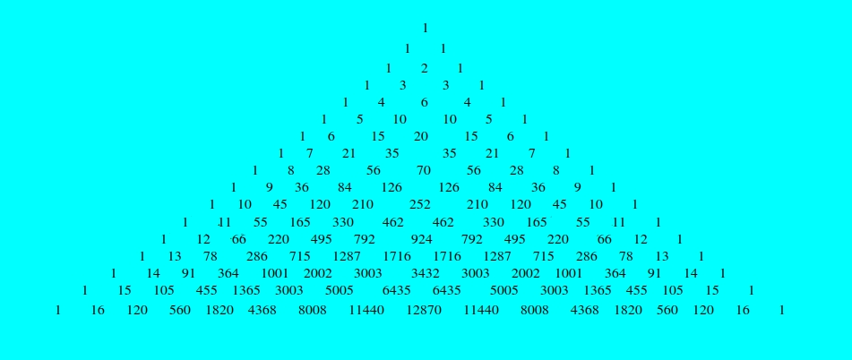

Pascal's Triangle
You only need addition to form one of the most beautiful mathematical structures. This is done by placing a number at the top, and adding it once to it's left, and once to it's right, then repeating that for the numbers that follow.
The one on the first row, or row "zero", at the top, becomes a one to the left and a one to the right. Then, each one goes once to the left and once to the right, so that there will be a two in the center, right below the one on row zero, and a one on each side. Continuing like this, the first 17 rows, or, you could say, row zero and rows one to sixteen:
The first diagonal has only ones; Diagonal two is all the natural numbers, from one to infinity; Diagonal three is the triangular numbers; Diagonal four is the pyramid numbers.
Meanwhile, on the vertical, the rows are powers of 11, and the sum of each row is a "power of two". With each one, they double, because each number on the previous row goes once to the left and once to the right.
Starting from a one that goes left once and right another time, you get two. Then, you get four. Then 8, 16, 32, 64, 128, 256, 512, 1024, and so on. By the time two is to the 16th power, it is 65536. By the 32th power - row 31 counting from 0, we reach 4.29 billion as the total sum, and a stunning 32 terms per line.
--- The rows themselves hold secrets. The 10th row holds an approxiamtion for Euler's constant, one of the three most used constants in math.
There are many more connections, some not related to the rows, diagonals or columns, but geometric shapes that form inside this seemingly purely algebraic triangle.